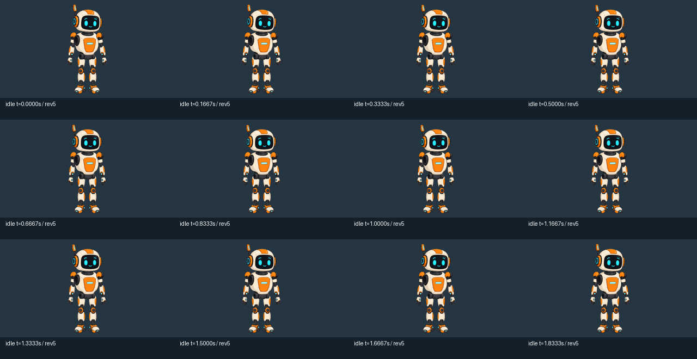
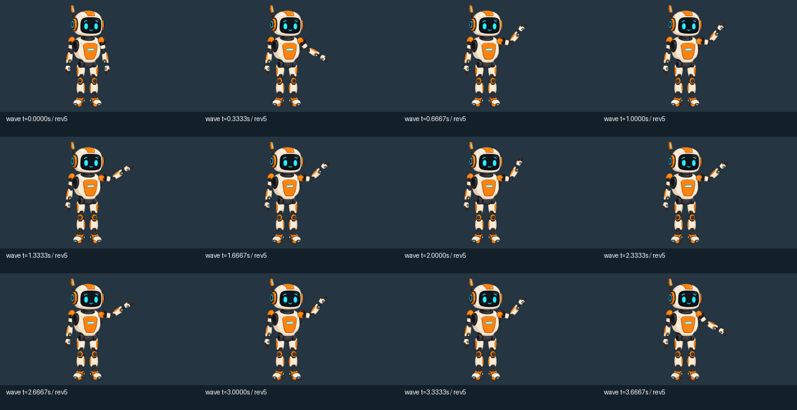

Native output. Gate is NOT passed: measured frame cadence exceeded 16.7 ms. Videos below contain exactly three loops from native PNG observation jobs, 12 fps. These videos are visual evidence, not the performance measurement.

